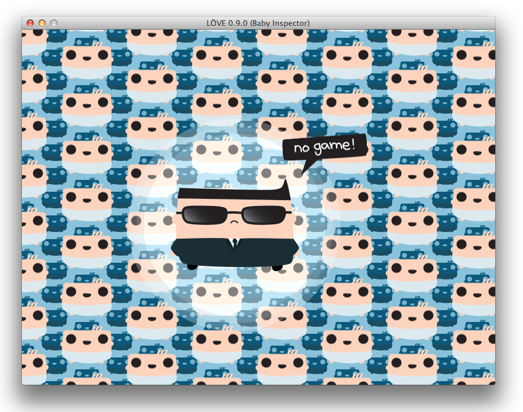

0.9.2
From LOVE


The codename for LÖVE 0.9.2 is Baby Inspector. It is currently released.
Changes from 0.9.1
Additions
- Added Lua 5.3's UTF-8 module, via
utf8 = require("utf8"). - Added Shader:getExternVariable.
- Added several new Canvas texture formats.
- Added love.graphics.getCanvasFormats.
- Added love.graphics.getCompressedImageFormats.
- Added ParticleSystem:setQuads.
- Added ParticleSystem:setLinearDamping.
- Added ParticleSystem:getLinearDamping.
- Added SpriteBatch:flush.
- Added love.graphics.getStats.
- Added
mirroredrepeatWrapMode. - Added love.audio.setDopplerScale and love.audio.getDopplerScale.
- Added optional duration argument to Joystick:setVibration.
- Added love.joystick.loadGamepadMappings and love.joystick.saveGamepadMappings.
- Added Joint:setUserData and Joint:getUserData.
- Added Joint:getBodies.
- Added GearJoint:getJoints.
- Added Body:getWorld.
- Added Body:getJointList.
- Added Contact:getFixtures and Body:getContactList.
- Added Body:isDestroyed, Fixture:isDestroyed, Joint:isDestroyed, and World:isDestroyed.
- Added love.mousemoved event callback.
- Added love.mouse.setRelativeMode and love.mouse.getRelativeMode.
- Added love.keyboard.getKeyFromScancode and love.keyboard.getScancodeFromKey.
- Added love.window.getDisplayName.
- Added love.window.minimize.
- Added love.window.showMessageBox.
- Added love.window.toPixels and love.window.fromPixels.
- Added love.window.setPosition and love.window.getPosition.
- Added
xandyfields to theflagstable in love.window.setMode and love.window.getMode, and to thet.windowtable in love.conf. - Added
refreshratefield to the table returned by love.window.getMode. - Added love.filesystem.isSymlink, love.filesystem.setSymlinksEnabled, and love.filesystem.areSymlinksEnabled.
- Added love.filesystem.getRealDirectory.
Deprecations
- Deprecated SpriteBatch:bind and SpriteBatch:unbind.
- Deprecated all uses of the name 'FSAA' in favor of 'MSAA'.
- Deprecated the
hdrcanvasGraphicsFeature constant in favor of love.graphics.getCanvasFormats. - Deprecated the
dxtandbc5GraphicsFeature constants in favor of love.graphics.getCompressedImageFormats. - Deprecated love.window.getWidth, love.window.getHeight, and love.window.getDimensions in favor of the love.graphics equivalents or love.window.getMode.
Renamed APIs
- Renamed all cases of FSAA to MSAA. The FSAA names still exist for backward-compatibility.
Fixes
- Fixed crashes when LÖVE objects are garbage-collected in multiple threads simultaneously.
- Fixed love.filesystem.setIdentity breaking in some situations when called multiple times.
- Fixed the default love.filesystem identity when in Fused mode in Windows.
- Fixed love.system.openURL sometimes blocking indefinitely on Linux.
- Fixed love.joystick.setGamepadMapping.
- Fixed the order of vertices in ChainShapes.
- Fixed love.mouse.getPosition returning outdated values if love.mouse.setPosition was used in the same frame.
- Fixed love.graphics.newFont to error when given an invalid size argument.
- Fixed the file name, line number, and backtrace given if love.graphics.print errors.
- Fixed a small memory leak if love.graphics.newCanvas errors.
- Fixed Shader:getWarnings returning unnecessary information.
- Fixed a potential crash when Shader objects are garbage collected.
- Fixed a potential small memory leak triggered when love.graphics.newShader errors.
- Fixed love.graphics.newMesh(vertexcount, ...) causing the Mesh to do instanced rendering.
- Fixed Mesh:getVertexMap.
- Fixed Image:refresh generating mipmaps multiple times if mipmap filtering is enabled.
- Fixed Image:setMipmapFilter to not keep bad state around if it errors.
- Fixed Mesh:setDrawRange when the Mesh has a vertex map set.
- Fixed internal detection of the 'position' and 'effect' shader functions.
- Fixed some cases of noncompliant shader code not properly erroring on some nvidia drivers.
- Fixed Texture memory leak when Meshes are garbage collected.
- Fixed the default line join mode to be 'miter' instead of an undefined value.
- Fixed Canvas:getPixel to error if the coordinates are not within the Canvas' bounds.
- Fixed detection of compressed textures to work regardless of the file's extension.
- Fixed the default error handler screen's text size when highdpi mode is enabled on a Retina monitor in OS X.
- Fixed the default error handler background color when sRGB mode is enabled for the window.
- Fixed the state of wireframe mode when love.window.setMode is called.
- Fixed love.window.setMode to fall back to the largest available mode if a width or height greater than the largest supported is specified and exclusive-fullscreen mode is used.
Other Changes
- Updated the Windows executable to always prefer the higher performance GPU on nvidia Optimus systems.
- Updated the --console command-line argument in Windows to open the console before conf.lua is loaded.
- Updated t.console and the --console command-line argument in Windows to use the existing console window, if LÖVE was launched from one.
- Updated the love executable to verify that the love library version matches before using it.
- Updated the Lua wrapper code for modules to avoid crashes when the module's instance is created, deleted, and recreated.
- Updated internal code for handling garbage collection of love objects to be more efficient.
- Updated love's initialization code to trigger a Lua error if love.conf has an error in it.
- Updated love.filesystem.getSaveDirectory and friends to strip double-slashes ("//") from their returned paths.
- Updated the error message when love.filesystem.write or File:open fails because the directory doesn't exist.
- Updated error message when love.math.setRandomSeed(0) is attempted.
- Updated the error message when invalid UTF-8 strings are used in love functions that expect UTF-8.
- Updated love.physics.newChainShape to error if the number of arguments is invalid.
- Updated love.physics.newPolygonShape and love.physics.newChainShape to accept a table of vertices.
- Updated love.thread.newThread to accept a literal string of code.
- Updated love-created threads to use names visible in external debuggers.
- Updated SpriteBatch:unbind / SpriteBatch:flush to use less VRAM if the SpriteBatch has the static usage hint.
- Updated love.graphics.newImage, love.image.newImageData, etc. to leave less temporary Lua-owned memory around.
- Updated love.graphics.push to accept different stack types to push. Current types are "transform" and "all".
- Updated love shaders to accept GLSL ES precision qualifiers (
lowp,mediump, andhighp) on variables, although they do nothing. - Updated the error message for love.graphics.newShader to be less cryptic if an invalid filename is given.
- Updated compressed texture loading code to support BC6 and BC7 compressed textures (if the graphics driver supports them.)
Categories: